Transitional Rugs
Transitional Rugs in Portland, Oregon
Our transitional rugs balance timeless Persian and Oriental-inspired patterns with softer palettes, simplified detail, and easy-to-style textures. They are ideal for Portland homes that mix antique furniture, clean modern lines, warm woods, and comfortable everyday living.
Ask About This Collection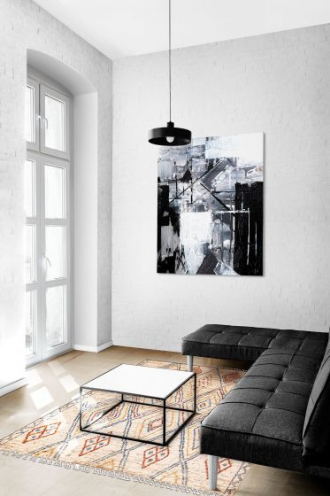
Shop by size
Transitional by rug size
Select a size to browse or add rugs in that size.
Available styles
Transitional Rugs gallery
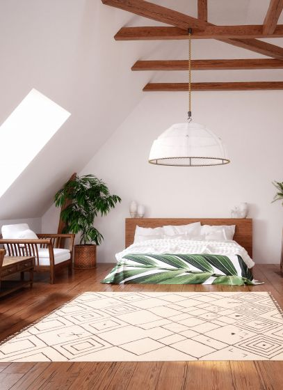
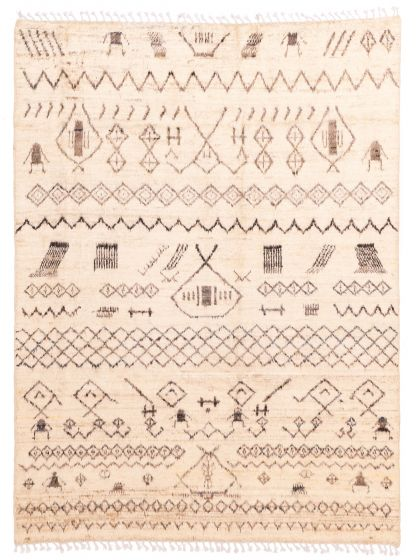
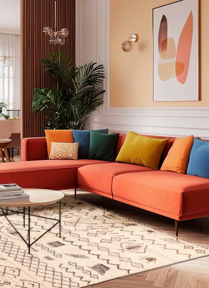
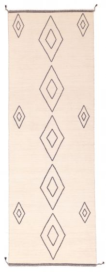
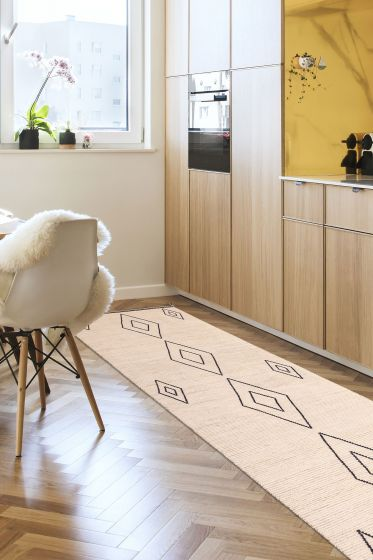
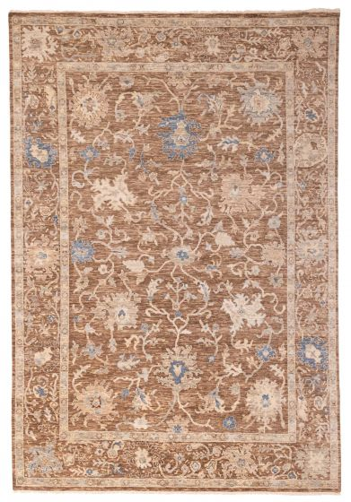
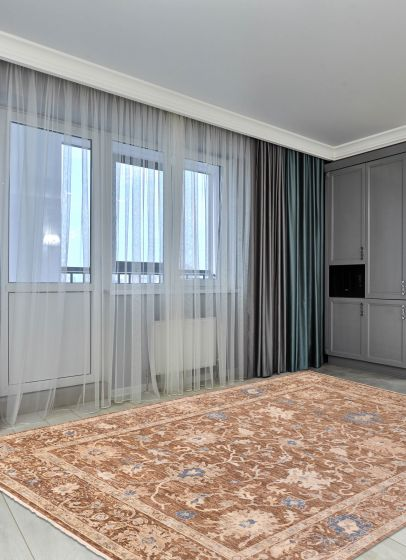
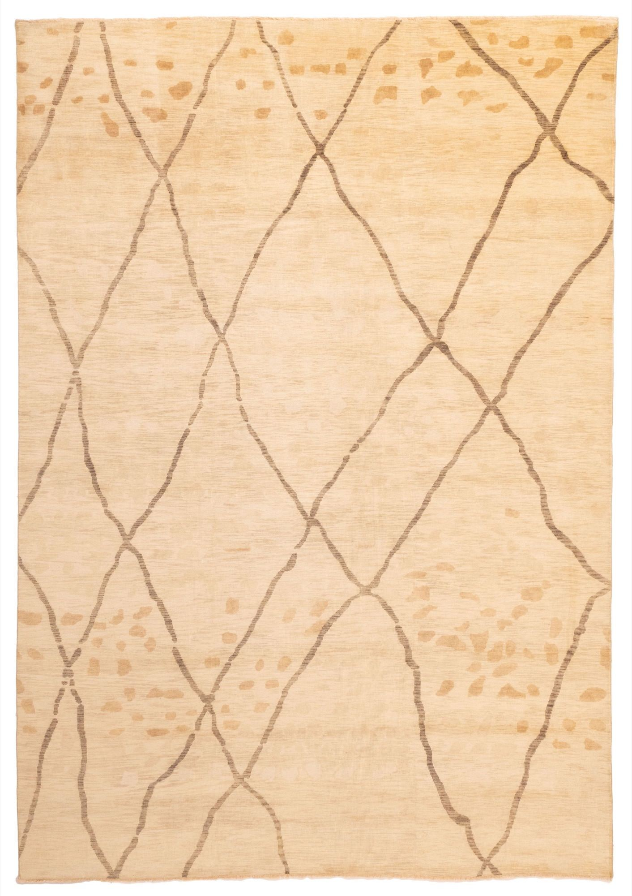
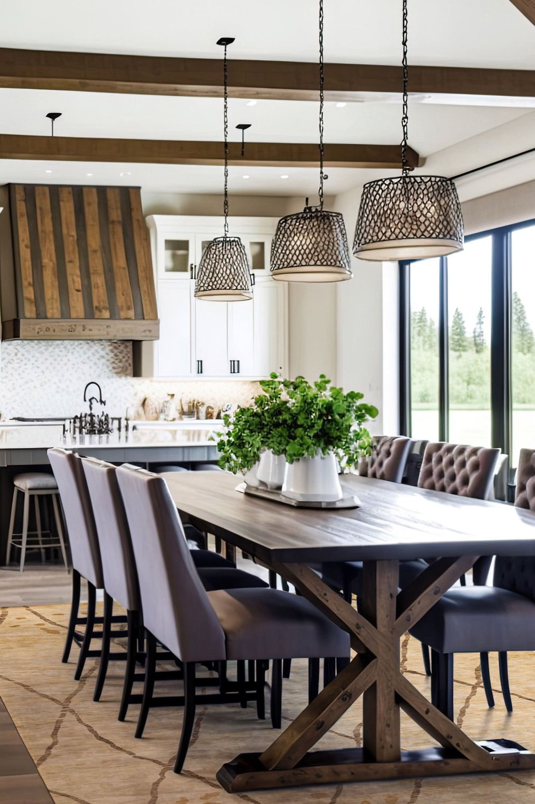
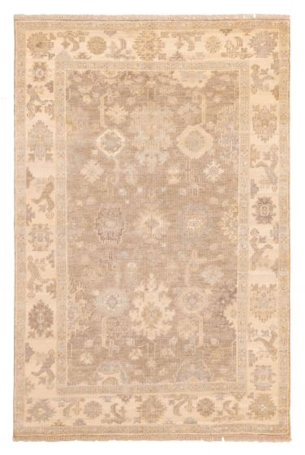
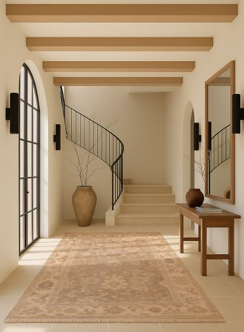
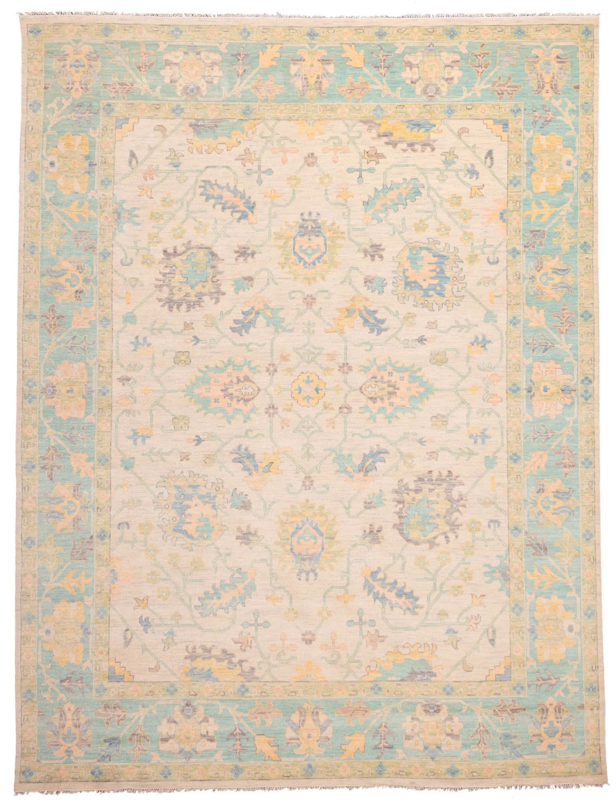
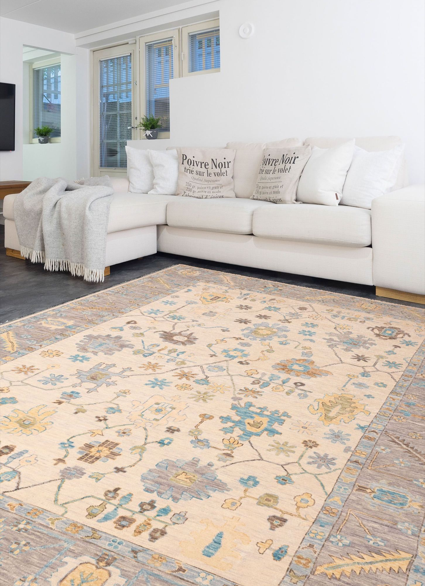
Size collections
Transitional rugs by size
Transitional rugs · 5 × 8 ft
No 5 × 8 ft rugs have been added to this collection yet.
Transitional rugs · 6 × 9 ft
No 6 × 9 ft rugs have been added to this collection yet.
Transitional rugs · 8 × 10 ft
No 8 × 10 ft rugs have been added to this collection yet.
Transitional rugs · 9 × 12 ft
No 9 × 12 ft rugs have been added to this collection yet.
Transitional rugs · 10 × 14 ft
No 10 × 14 ft rugs have been added to this collection yet.